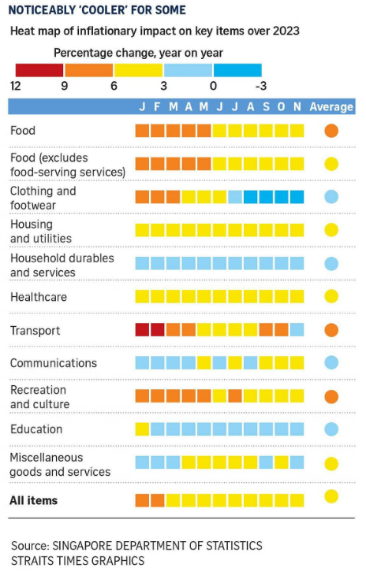

library(tidyverse)
library(ggplot2)
library(knitr)
library(dplyr)
library(readxl)Aliceblue_Project_Prep
Data Preparation
Introduction
This document outlines the data engineering required to reconstruct and improve the visualisation of the heat map as shown in Figure 1, which depicts the monthly inflationary impact on key goods and services across each month in Singapore over 2023.
The code below requires the following packages:

Data Cleaning
The Straits Times based their visualisation on data published by the Singapore Department of Statistics (DOS). whereby the data in CSV format represents the CPI for each category of key goods and services with 2019 as the base year. The CSV file contains 15 separate sheets which cover average retail prices, CPI and year-on-year percent change in CPI across various time periods (annual, half-yearly, quarterly, and monthly) respectively.
However, with reference to Figure 1, only Sheet T11 (Percent Change In Consumer Price Index (CPI) Over Corresponding Period Of Previous Year, 2019 As Base Year, Monthly) will be used to accurately reflect the year-on-year data ordered by month as visualised in the heat map.
Relevant columns for data processing include:
Variables: Name of key items. These are separated into sub-categories such as “Food”, “Clothing & Footwear”, “Housing & Utilities”, etc.- Date columns: These represent year-on-year CPI values for each Variable. The columns are named according to the corresponding year and month they represent, such as 2019 Jan, 2020 Jun, etc.
The following code loads the data from Sheet T11 in the CSV file, skipping the first 5 rows and removing any rows with NA values:
# Load full data, select specific sheet (T11), skip first 5 rows and remove rows with NA values
data <- read_excel("cpiapr24.xlsx", sheet = "T11", skip = 5) |>
filter(if_all(everything(), ~ !is.na(.)))The data is filtered to include only the relevant variables so as to focus on the specific categories visualised on the heat map:
# Filter the data to include only these categories
categories <- c(
"Food",
"Food Excl Food Serving Services",
"Clothing & Footwear",
"Housing & Utilities",
"Household Durables & Services",
"Health Care",
"Transport",
"Communication",
"Recreation & Culture",
"Education",
"Miscellaneous Goods & Services"
)The data is then filtered to include only data from the base year onwards (2019). This is done to narrow down the size of the dataset for easier management and faster performance, as well as to ensure the dataset’s consistency with the base year:
# Filter the data to include only these categories and the months from 2019 onwards
data <- data |>
filter(Variables %in% categories) |>
select(Variables, starts_with("2019"), starts_with("2020"), starts_with("2021"), starts_with("2022"), starts_with("2023"))
# Print the filtered data
options(max.print = 1e6)
print(data, n = nrow(data), width = Inf)# A tibble: 11 × 61
Variables `2019 Jan` `2019 Feb` `2019 Mar`
<chr> <chr> <chr> <chr>
1 Food 1.6 1.5 1.7
2 Food Excl Food Serving Services 1.3 0.9 1.5
3 Clothing & Footwear 3.1 1.7 0.7
4 Housing & Utilities -0.6 -0.6 -0.5
5 Household Durables & Services 0.8 1 0.7
6 Health Care 2 1.9 1.8
7 Transport -2.2000000000000002 -1.4 -0.5
8 Communication -2.2999999999999998 -1.8 -0.3
9 Recreation & Culture 1 1.2 2
10 Education 3.2 2.6 2.6
11 Miscellaneous Goods & Services 1.3 1.3 -0.2
`2019 Apr` `2019 May` `2019 Jun` `2019 Jul`
<chr> <chr> <chr> <chr>
1 1.5 1.5 1.4 1.3
2 1.2 1.2 0.8 0.5
3 -1.1000000000000001 -0.7 -0.7 -2.9
4 -0.7 -0.8 -0.9 -1.3
5 1.5 1.2 1.1000000000000001 0.7
6 1.4 1.5 1 1.1000000000000001
7 1.8 1.8 0.4 0.4
8 -0.1 -1.4 -1.9 -2.6
9 2.1 1.6 1.6 0.9
10 2.5 2.5 2.5 2.2999999999999998
11 -0.1 0.3 0.4 0.4
`2019 Aug` `2019 Sep` `2019 Oct` `2019 Nov`
<chr> <chr> <chr> <chr>
1 1.6 1.5 1.6 1.6
2 1.2 1.1000000000000001 1.4 1.3
3 -3.5 -1.1000000000000001 -1.9 -1.1000000000000001
4 -1.4 -1.3 -1.3 -1.3
5 0.7 0.4 0.2 0.5
6 0.9 1.2 1 0.1
7 1.2 0.8 1.6 2.2000000000000002
8 -0.5 -1.1000000000000001 -0.9 0.8
9 0.5 0.5 0.6 0.9
10 2.2000000000000002 2 2 2.1
11 0.2 0.1 0.2 0.3
`2019 Dec` `2020 Jan` `2020 Feb` `2020 Mar` `2020 Apr`
<chr> <dbl> <dbl> <dbl> <chr>
1 1.7 1.7 1.6 1.5 2.1
2 1.4 1.8 1.8 1.6 3.5
3 -1.7 -3.8 -2.7 -2.8 -3.2
4 -1.1000000000000001 -0.4 -0.2 -0.1 0.1
5 0.6 0.4 0.4 0.5 -0.2
6 -0.6 -1.3 -1.5 -1.8 -1.8
7 3.1 4.2 1.7 0.1 -4
8 1.2 0.7 1.1 -0.2 -0.6
9 0.1 0.5 -1.5 -1.8 -2.8
10 2.2999999999999998 -0.6 -0.5 -0.5 -0.6
11 0.3 -0.2 0 -0.2 -0.9
`2020 May` `2020 Jun` `2020 Jul` `2020 Aug`
<chr> <chr> <chr> <chr>
1 2.2000000000000002 2.2999999999999998 2.2000000000000002 1.8
2 4 4.4000000000000004 4 3.3
3 -4.4000000000000004 -3.2 -4.0999999999999996 -3.3
4 0.1 0.2 -0.8 -0.7
5 -0.4 0 0.2 0.3
6 -1.9 -1.7 -1.9 -1.9
7 -4.8 -3.1 -1.4 -1.5
8 -0.5 0 1.4 1.9
9 -2 -2.9 -2.2999999999999998 -1.4
10 -0.6 -0.6 -0.7 -0.7
11 -1.4 -1.9 -1.7 -1.9
`2020 Sep` `2020 Oct` `2020 Nov` `2020 Dec`
<chr> <chr> <chr> <chr>
1 1.8 1.7 1.8 1.6
2 3.1 2.5 2.6 2.2999999999999998
3 -4.5999999999999996 -4.3 -5.8 -4.0999999999999996
4 -0.7 -0.3 -0.3 -0.2
5 0.7 0.7 0.4 0.5
6 -2 -1.7 -0.5 -0.4
7 0.5 -0.6 -0.4 0.6
8 2 0.8 0.8 0.7
9 -1.2 -2 -1.9 -2.2000000000000002
10 -0.3 -0.7 -0.8 -1
11 -1.4 -1.3 -1.7 -1.4
`2021 Jan` `2021 Feb` `2021 Mar` `2021 Apr`
<chr> <chr> <chr> <chr>
1 1.5 1.6 1.4 1
2 2 2.6 2.2000000000000002 0.6
3 -4.5999999999999996 -6.3 -4.8 -4.9000000000000004
4 -0.3 -0.3 -0.2 0.5
5 1 1 1.2 1.2
6 -0.1 -0.2 1 0.9
7 0.7 3.1 5.7 9.6999999999999993
8 1.2 0.6 0.8 -0.3
9 -1.2 0.1 0.3 0.8
10 0.7 1 1 1
11 -1.5 -1.4 -1.1000000000000001 -0.3
`2021 May` `2021 Jun` `2021 Jul` `2021 Aug`
<chr> <chr> <chr> <chr>
1 1 0.9 1.1000000000000001 1.5
2 0.6 0.1 0.7 1.4
3 -4.0999999999999996 -9 -5.5 -6.2
4 0.6 0.8 1.9 2.2000000000000002
5 1.6 1.5 1.6 1.6
6 1 1.1000000000000001 1.6 1.7
7 11 11.1 9.6 8.3000000000000007
8 0.4 0.2 -1.5 -2.2000000000000002
9 1 1.1000000000000001 1.4 1.4
10 1 1.3 1.4 1.3
11 -0.3 -0.1 -0.7 -0.1
`2021 Sep` `2021 Oct` `2021 Nov` `2021 Dec` `2022 Jan`
<chr> <chr> <chr> <chr> <chr>
1 1.6 1.7 1.9 2.1 2.6
2 1.6 2.1 2.5 3 3.5
3 -5 -3.2 -6.6 -6.2 -4.4000000000000004
4 2.2999999999999998 2.7 3.1 3.4 4.0999999999999996
5 1.5 1.6 1.8 2 1.7
6 1.8 1.7 1.5 1.5 1.7
7 8.3000000000000007 11.1 14.2 13.7 12.7
8 -2.2000000000000002 -1.6 -1.2 -1.2 -2
9 1.5 2.1 2 1.9 1.3
10 1.2 1.6 1.6 2 2.2000000000000002
11 -0.3 -0.6 -0.1 0 -0.2
`2022 Feb` `2022 Mar` `2022 Apr` `2022 May`
<chr> <chr> <chr> <chr>
1 2.2999999999999998 3.3 4.0999999999999996 4.5
2 2 3.5 4.5 4.5
3 -2.8 -3.3 0.8 2.2000000000000002
4 4.0999999999999996 4.4000000000000004 5 5
5 1.7 1.6 2 2.1
6 1.9 1.1000000000000001 1.6 1.3
7 14.8 18.7 15.5 15.5
8 -3.1 -2.6 -0.9 -0.8
9 0.8 2.2000000000000002 2.7 3.5
10 2 2 2 2.4
11 0.1 0.3 0.1 0
`2022 Jun` `2022 Jul` `2022 Aug` `2022 Sep`
<chr> <chr> <chr> <chr>
1 5.4 6.1 6.4 6.9
2 5.6 6.1 6.3 6.8
3 5.5 6.6 8.6999999999999993 6
4 5.2 5.9 6 6.2
5 2.1 1.9 2.2000000000000002 2.2999999999999998
6 1.9 2.7 2.7 2.8
7 18.8 19 20.2 19
8 -1.1000000000000001 -1.3 -1.1000000000000001 0
9 5.0999999999999996 4.9000000000000004 5.9 6.1
10 2.2000000000000002 2.2000000000000002 2.2000000000000002 2.1
11 0.4 0.4 0.2 0.8
`2022 Oct` `2022 Nov` `2022 Dec` `2023 Jan` `2023 Feb`
<chr> <chr> <chr> <chr> <chr>
1 7.1 7.3 7.5 8.1 8.1
2 6.8 6.7 7.1 7.2 7.5
3 3.2 6.7 6 6.9 7.1
4 5.9 5.6 5.5 5.4 5.3
5 2.4 2.4 2 2.8 2.7
6 2.8 2.7 3 4 4
7 15.5 14.9 12.7 11.9 9.6999999999999993
8 -0.1 -0.7 -0.7 0.6 2.9
9 5.6 5.8 7.5 6.7 6.9
10 2 1.9 2.1 3 2.9
11 0.9 1.5 1.1000000000000001 2.1 2.6
`2023 Mar` `2023 Apr` `2023 May` `2023 Jun` `2023 Jul` `2023 Aug` `2023 Sep`
<dbl> <dbl> <dbl> <dbl> <dbl> <dbl> <dbl>
1 7.7 7.1 6.8 5.9 5.3 4.8 4.3
2 7.4 6.4 6.7 5.1 4.6 4.4 3.5
3 6.3 5.6 4.1 4 0.6 -0.5 -1.7
4 5.2 4.5 4.4 4.3 3.9 3.8 3.7
5 2.4 1.9 1.6 2.1 2.3 1.5 1.5
6 4 4.2 4.6 5 4 4.3 4.5
7 6.2 8.6 6 4.6 3.7 4.8 6.3
8 2.7 2.7 3 2.5 3.3 2.2 3.6
9 6.8 7.6 6.4 5.7 6.5 5.1 4.3
10 3 3 2.6 2.6 2.6 2.6 2.4
11 3 3.1 3.6 3.2 4 4.2 2.6
`2023 Oct` `2023 Nov` `2023 Dec`
<dbl> <dbl> <dbl>
1 4.1 4 3.7
2 3.4 3.5 2.5
3 -0.1 -0.5 -1
4 3.9 3.8 3.8
5 1.3 1 1.5
6 5.2 5.1 5.1
7 8.4 2.8 3.9
8 3.6 4 3.9
9 5.8 5.6 6.3
10 2.7 2.7 2.6
11 3.4 2.8 2.3